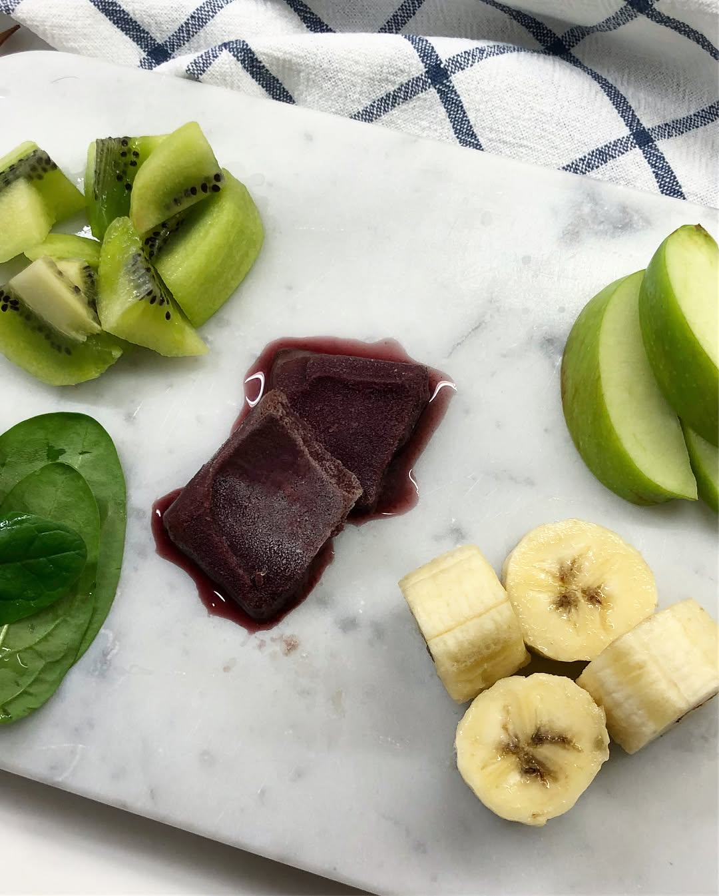

It was supposed to be a green smoothie 😬 with frozen acai berry juice 🙄 naive me 😂 anyway it is absolutely delicious purple smoothie green in its soul 👍🏼 ingredients: banana, spinach, kiwi, green apple and frozen acai berry juice - packed with vitamins and micro-elements! Share your favorite smoothie recipe please 😊 — #smoothies #smoothiebowl #homemade #cookathome #athleteschoice #triathlontraining #ironmantraining #swimbikerun #marathontraining #ironmantri #trailrunning #foodblogger #instafood #foodography #acaibowl
2018-03-19 19:53:24
Back to main page